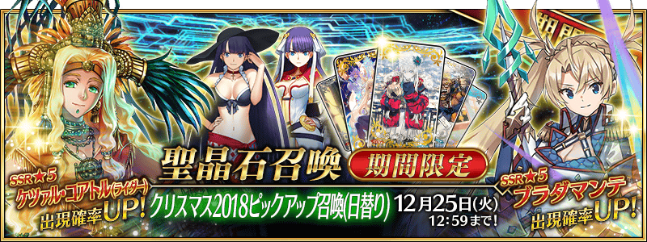
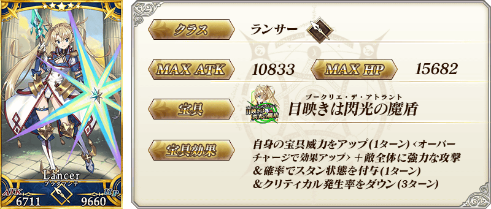
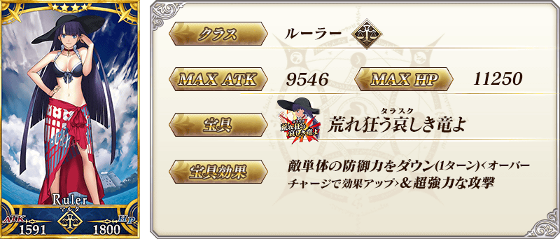
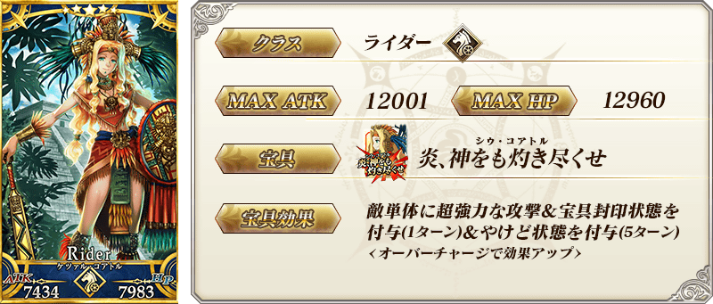
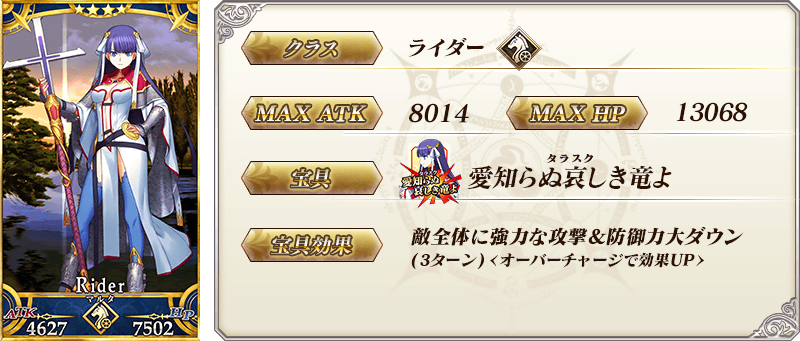
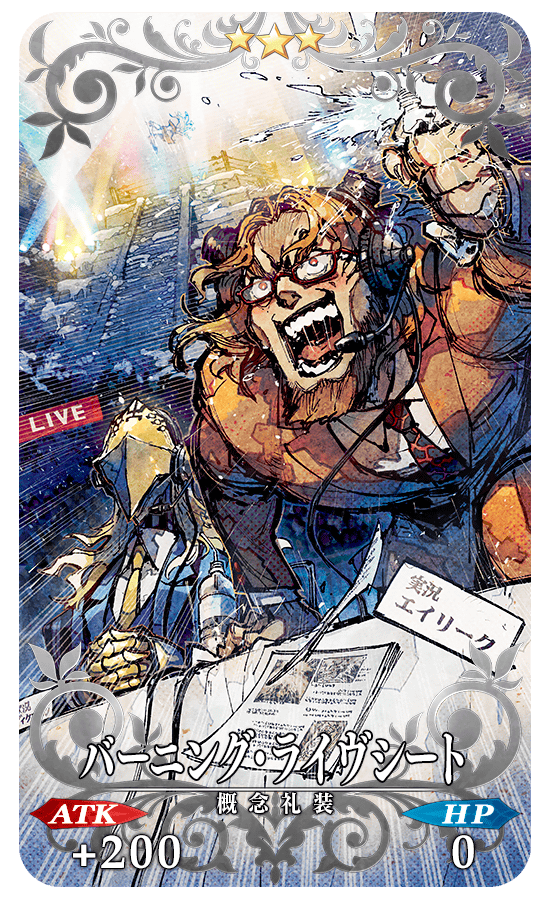
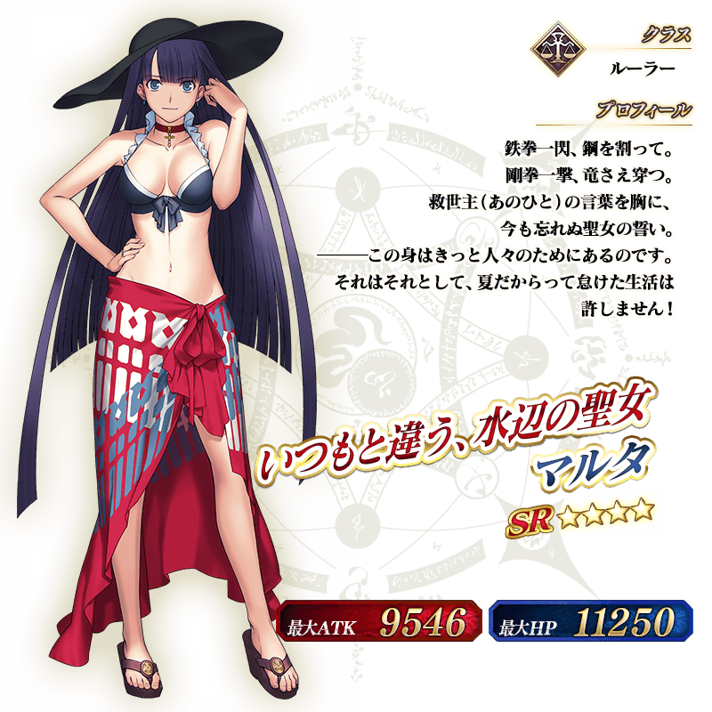
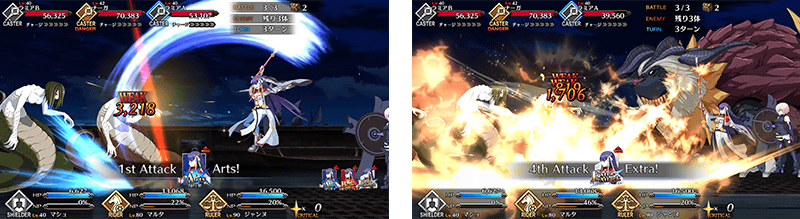

◆「聖誕節2018Pick Up召喚(每日交替)」期間◆
期間:2018年12月12日(三) 17:00～12月25日(二) 11:59
舉辦期間限定「聖誕節2018Pick Up召喚(每日交替)」！
※未通過第2部 第1章「Lostbelt No.1 永久凍土帝國 安娜塔西亞 獸國的皇女」的狀態也能進行「聖誕節2018Pick Up召喚(每日交替)」。
在期間限定活動「聖誕節2018 聖森巴之夜 ～降雪遺跡與少女騎士～」活躍的「★5(SSR)布拉達曼特」新登場！
並且「★4(SR)瑪爾大(Ruler)」以期間限定登場！
本次包含上述Pick Up 4位Servant！
「★5(SSR)布拉達曼特」「★5(SSR)魁札爾・科亞特爾(Rider)」「★4(SR)瑪爾大(Rider)」「★4(SR)瑪爾大(Ruler)」以每日交替Pick Up。
詳情請在聖晶石召喚畫面左下的召喚詳細確認。
做為期間限定概念禮裝「★5(SSR)シュヴィブジック・スノー」「★4(SR)リング・ザ・ベル」「★3(R)バーニング・ライヴシート」登場！
裝備上述3種的概念禮裝的話，期間限定活動「聖誕節2018 聖森巴之夜 ～降雪遺跡與少女騎士～」中會提升活動收集道具的掉落獲得數。
◆有關Servant的注意◆
※請注意「聖誕節2018Pick Up召喚(每日交替)」做為每日交替，布拉達曼特、魁札爾・科亞特爾(Rider)、瑪爾大(Ruler)就算Pick Up期間中也會有不被抽出的日子。
※布拉達曼特自Pick Up期間結束後的2018年12月25日(二) 12:00追加到故事召喚。
※魁札爾・科亞特爾(Rider)、瑪爾大(Rider)在Pick Up期間結束後仍會在故事召喚被抽出。
※瑪爾大(Ruler)在Pick Up期間結束後不會追加到故事召喚。
※Pick Up期間中，魁札爾・科亞特爾(Rider)就算通過章節前也能入手。
◆有關概念禮裝的注意◆
※バーニング・ライヴシート在Pick Up期間中，也能在友情點數召喚獲得。
※請注意自友情點數召喚抽出的バーニング・ライヴシート在自動變還設定登錄★3(R)概念禮裝的情況，會變成自動變還的對象。
Pick Up期間中，新登場Servant、期間限定Servant、Pick Up Servant、期間限定概念禮裝的出現機率提升！
10次召喚中確定1張★4(SR)以上和確定1位★3(R)以上的Servant！
※確定★4(SR)以上包含Servant和概念禮裝。
| 每日交替Pick Up期間 | 每日交替Pick Up內容 |
|---|---|
| 12月12日(三) 17:00～ 12月14日(五) 22:59 |
布拉達曼特 瑪爾大(Rider) 瑪爾大(Ruler) |
| 12月14日(五) 23:00～ 12月16日(日) 22:59 |
布拉達曼特 瑪爾大(Rider) |
| 12月16日(日) 23:00～ 12月18日(二) 22:59 |
布拉達曼特 瑪爾大(Ruler) |
| 12月18日(二) 23:00～ 12月20日(四) 22:59 |
魁札爾・科亞特爾(Rider) 瑪爾大(Rider) 瑪爾大(Ruler) |
| 12月20日(四) 23:00～ 12月22日(六) 22:59 |
布拉達曼特 魁札爾・科亞特爾(Rider) 瑪爾大(Rider) 瑪爾大(Ruler) |
| 12月22日(六) 23:00～ 12月25日(二) 11:59 |
布拉達曼特 瑪爾大(Rider) 瑪爾大(Ruler) |
※請注意會以每日交替變更Pick Up的Servant。


※上述「★5(SSR)布拉達曼特」的卡面為靈基再臨第2階段。


※上述「★5(SSR)魁札爾・科亞特爾(Rider)」的卡面為靈基再臨第2階段。

※上述「★4(SR)瑪爾大(Rider)」的卡面為靈基再臨第2階段。
 |
★★★★★SSR |
 |
★★★★SR |
|  |
★★★R |

※上述「★5(SSR)布拉達曼特」的立繪為靈基再臨第2階段。

※上述「★5(SSR)魁札爾・科亞特爾(Rider)」的立繪為靈基再臨第2階段。

介紹布拉達曼特的寶具演出！
在「Fate/Grand Order」官方網站內的公告中，公開了「★5(SSR)布拉達曼特」的寶具演出。敬請確認。
翻新在期間限定活動「聖誕節2018 聖森巴之夜 ～降雪遺跡與少女騎士～」活躍的「★4(SR)瑪爾大(Rider)」戰鬥動作及寶具演出！
另外，「Fate/Grand Order」官方網站內的公告中，公開了「★4(SR)瑪爾大(Rider)」的寶具演出。敬請確認。
◆翻新時間◆
2018年12月12日(三) 17:00～

介紹魁札爾・科亞特爾(Rider)、瑪爾大(Ruler)的寶具演出！
在「Fate/Grand Order」官方網站內的公告中，公開了「★5(SSR)魁札爾・科亞特爾(Rider)」「★4(SR)瑪爾大(Ruler)」的寶具演出。敬請確認。
關於期間限定活動「聖誕節2018 聖森巴之夜 ～降雪遺跡與少女騎士～」的詳情請自下述橫幅確認。